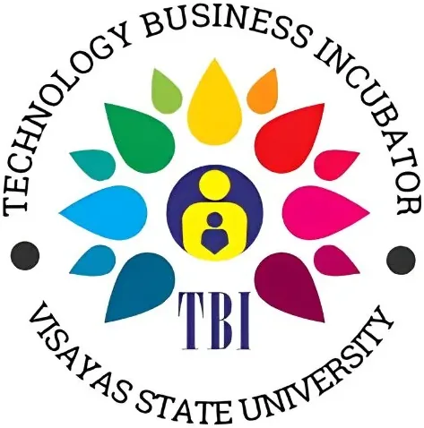

DOST-PCAARRD-VSU Agri-Aqua Technology Business Incubator (VSU-TBI)
Visayas State University · Region VIII
The DOST-PCAARRD-VSU Agriculture & Food TBI is hosted by Visayas State University in Baybay City, Leyte and is the first Technology Business Incubator established in Eastern Visayas. Strategically located adjacent to VSU's Technomart and Pasalubong Center, the TBI is designed to fast-track the translation of technologies developed by VSU and partner research institutions into commercial products ready for local and national markets.
- Category
- Technology Business Incubator
- Host institution
- Visayas State University
- City
- Baybay City, Leyte
- Region
- Region VIII
- Operating status
- Operating
About the Center
Established with joint funding from DOST and PCAARRD, VSU-TBI is a collaborative project of VSU's Office of the Director for Research and the Department of Business Management. It accelerates the development of agri-business and food techno-entrepreneurship ventures in Region VIII, supporting startups from ideation through to commercially viable businesses.
VSU-TBI earned regional recognition as the Best Licensor at the Innovation and Technology Transfer Summit Visayas 2025. The center develops youth agri-aqua entrepreneurs through the LIYAB (Leveraging Innovation in Youth for Sustainable Agri-Aqua Breakthrough) project, approved by NEDA in 2024, and runs active skills programs including ube paste processing training and entrepreneurship bootcamps.
Programs & Services
- Agri-Food Technology Incubation — End-to-end incubation support for startups and MSMEs in agriculture, aquaculture, and food processing using VSU-developed and DOST-PCAARRD technologies
- LIYAB Youth Innovation Program — A NEDA-approved initiative providing young agri-aqua entrepreneurs with mentorship, incubation, and business development support to enter and scale in agriculture and aquaculture
- Technology Licensing & Transfer — Facilitation of formal technology licensing agreements for VSU-developed innovations, connecting research outputs to business adopters across the region
- Skills Training & Enterprise Bootcamps — Practical training in food processing (ube paste, root crops, and other value-added products), product development, and entrepreneurship for aspiring agripreneurs
- Business Development & Pitching — Coaching on business model development, investor pitching, branding, and market linkage to prepare incubatees for scale-up
- Technomart & Market Access — Connection to VSU's Technomart and Pasalubong Center for product display, trial sales, and direct market exposure
- DOST Funding Access — Guidance for incubatees on PCAARRD grants, DOST startup programs, and other national S&T funding mechanisms
Contact
Sources & references
- vsu.edu.ph/gs/1467-vsu-launches-tbi
- vsu.edu.ph/articles/news/2693-vsu-liyab-project-secures-neda-approval-to-bo…
- atbi.pcaarrd.dost.gov.ph/incubators
Details are drawn from public records and the sources above, July 2026.
Startupreneur Innovation Hub · synced from the Notion catalog (July 2026) · status: published.